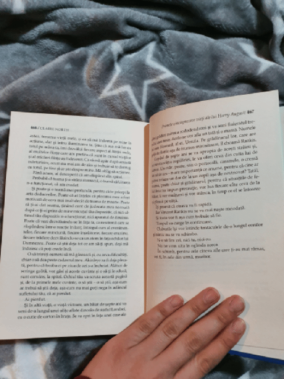

„Primele cincisprezece vieți ale lui Harry August” este o carte care te marchează. Odată citită îți lasă semne de întrebare legate de tot ceea ce te înconjoară. Dacă până acum credeai că fiecare persoană cu care te intersectezi e specială...HABAR N-AI CE DREPTATE AVEAI. Te-ai gândit vreodată că vampirii exită? Ei bine, nu chiar vampiri, dar ființe cu sufletul mai bătrân decât stră-bunicul tau?
Harry August - un vampir, un suflet neliniștit, un călător prin timp, un om simplu ca noi toți, de altfel. Îl cunoaștem pe Harry de mic. Creștem împreună cu el pe parcursul romanului. Simțim claustrarea izolării de familie, de prieteni, de societate. Fiecare cădere al lui Harry e resimțită de cititori.
Pentru mine, o simplă fată care din întâmplare a dat de această carte, nu însemna nimic. O primisem, nu mai auzisem de autoare niciodată, descrierea nu mă fascina și am amânat citirea ei până când am citit tot ceea ce aveam de citit în bibliotecă. Nu am regretat amânarea asta pentru că odată ce am început-o, nu am vrut să o mai las din mâini. Am fost uimită de stilul unic de a scrie al lui Claire North, de felul în care te făcea să te simți prezent în acțiune, te plimba prin timp și spațiu alături de personaj. Descrierile ei sunt atât de clare încât vedeai fără pic de greutate peisajele, personajele, vedeai și simțeai tot ce trăia Harry August.
The most it ever seems we know how to do with time, is to waste it.
Cartea este o adevărată provocare. Te îndoiești de tine, te descoperi, îți poți dori să știi mai mult sau poți ajunge să speri că se va termina cât mai repede. Harry August ne scoate la o plimbare prin cele mai teribile evenimente ale secolului al XIX-lea și le descrie cu o precizie care ne marchează. El ne învață că toate greșelile trebuie îndreptate cât mai repede, altfel devin doar niște greutăți pe care le tragem după noi la nesfârșit..sau până când ne ajung din urmă și de lovesc din plin.
Nu aș vrea să dau mai multe detalii. Farmecul cărții stă în secretele pe care le ascunde. Dar vă recomand să o citiți. E pentru toate gusturile, satisface toate poftele. Are de la mine nota 10.
